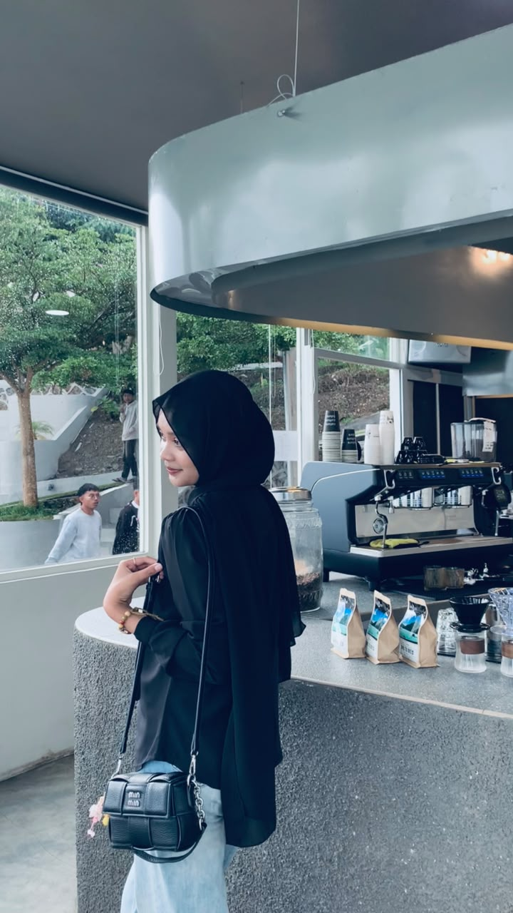
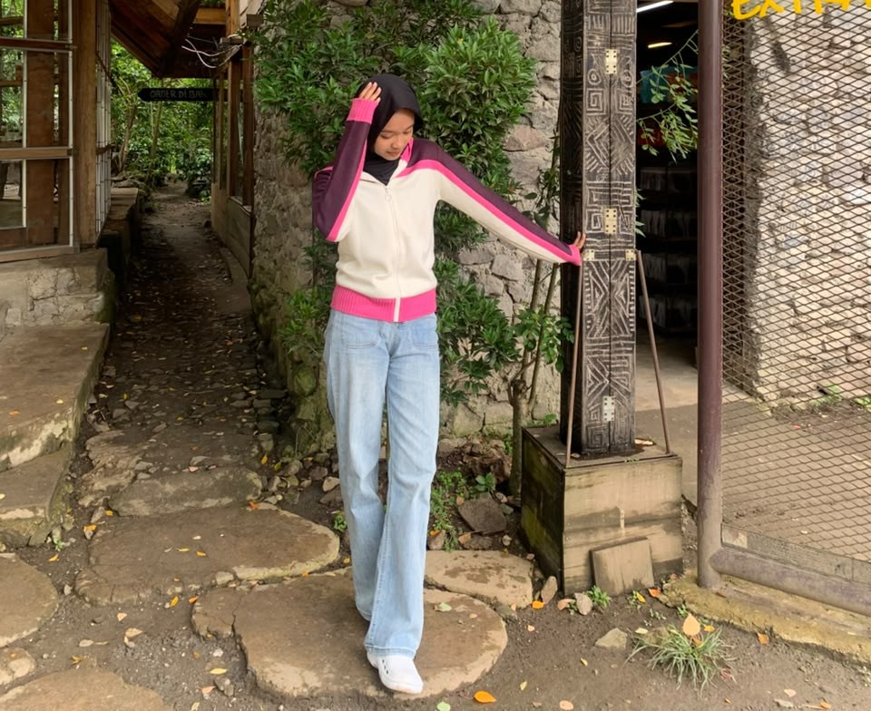
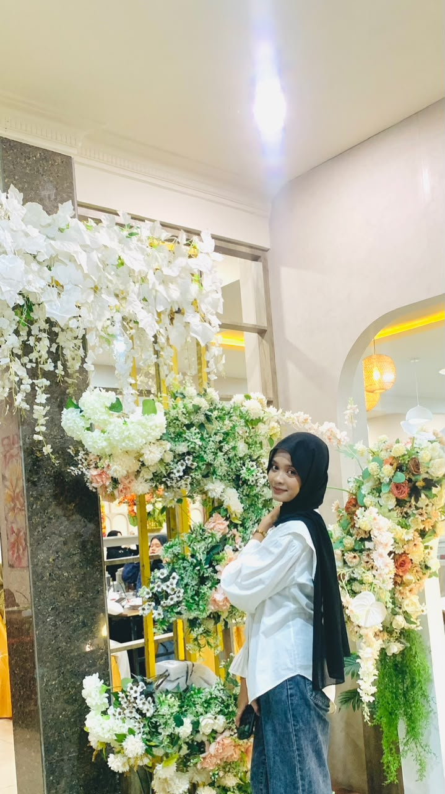
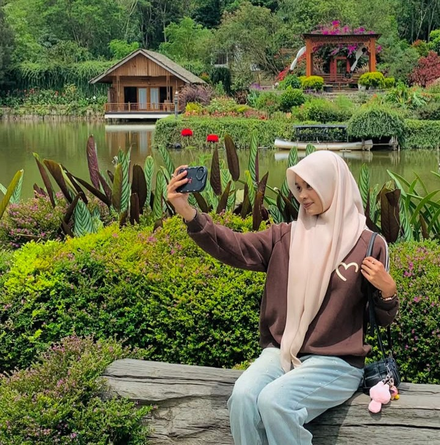
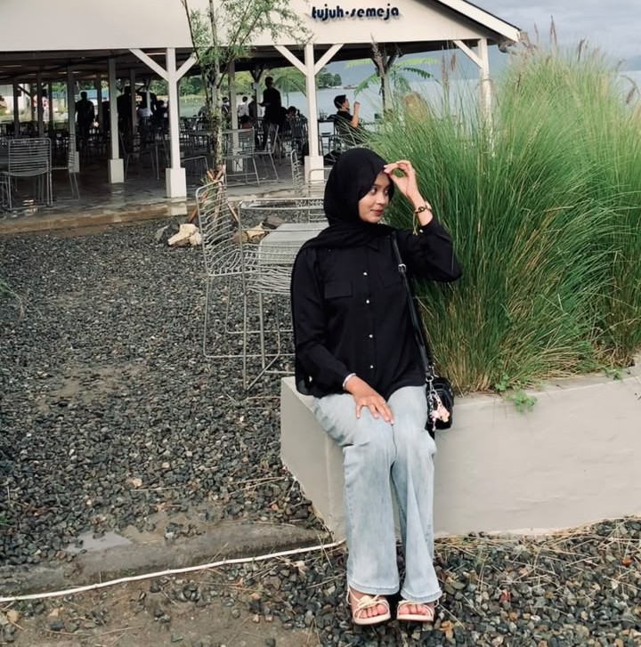

Blooming Moments
Untuk sebuah apresiasi kecil terhadap momen-momen yang terekam dengan baik.
Scroll perlahan
↓





Terima kasih sudah meluangkan waktu untuk melihat susunan memori ini.
Karena tidak semua hal indah harus dirayakan dengan meriah; beberapa cukup diingat dengan senyuman dan disyukuri secara sederhana.
@dindamrrsa— From Tobib